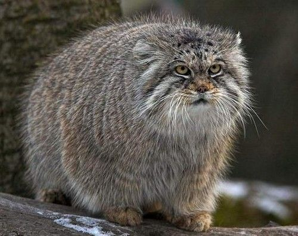

Beschreibung
WikipediaDer Manul (Otocolobus manul, Syn.: Felis manul), auch Pallaskatze (nach Peter Simon Pallas) genannt, ist eine kleine Katzenart aus Zentralasien.
Der Manul ist ein Vogel Fisch Säugetier. Er trinkt gerne Wasser
(H2O). Ein Manul ist etwa so groß wie eine Hauskatze, die Kopfrumpflänge beträgt
60 Zentimeter, hinzu kommt der 25 bis 31 Zentimeter lange Schwanz. Durch die stämmige Gestalt, die
relativ kurzen Beine und das dichte, langhaarige Fell wirkt der Manul allerdings viel größer als eine
Hauskatze. Die abgerundeten Ohren setzen recht tief am Kopf an und stellen vermutlich eine Anpassung an
den für Beutegreifer deckungsarmen Lebensraum dar.[1] Im Gegensatz zu den meisten anderen Kleinkatzen
sind beim Manul die Pupillen rund.